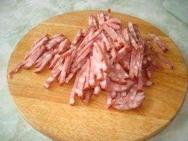
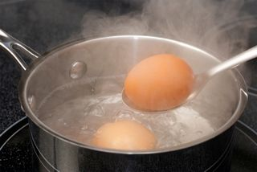
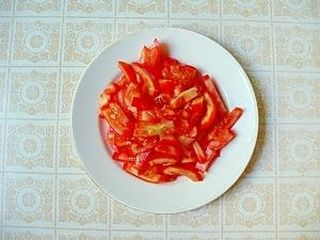
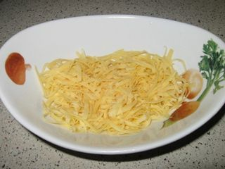

Шаг 1: Нарезаем ингредиенты.

Для того, чтобы начать собирать наш салат, необходимо нарезать и натереть все ингредиенты.

Чтобы не терять даром время, возьмите кастрюлю, залейте водой и поставьте вариться яйца. Возьмем разделочную доску и порежем соломкой колбасу. Если у вас нет копченой колбасы, возьмите любую другую. Но лучше всего к салату подойдет именно копченая колбаса.

После, помойте и нарежьте соломкой помидор. Почистите и помойте чеснок и нарежьте мелкими кубиками или просто пропустите через пресс. Сыр натрите на мелкой терке. К этому времени яйцо должно свариться. Охладите его, почистите и натрите на мелкой терке. Вот и все, салат готов к сборке.
Шаг 2: Собираем салат.

Когда все ингредиенты порезаны и натерты, начинаем собирать наш салат. Для этого возьмите салатную миску и выложите в нее слой колбасы, затем слой нарезанного помидора и слой чеснока. Не перемешивайте ингредиенты, салат должен быть "слоистым". Когда первые три слоя выложены, сделайте сверху сеточку из майонеза. 4 слой выложите натертым яйцом и снова сделайте сеточку из майонеза. 5 и завершающий слой выкладывайте тертым сыром. Вот и все, наш салат собран.